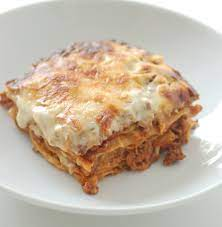

Lasagna

Description
Tried, tested and true. This wonderful dish has withstood the test of time and has been loved by everyone. Not the skinniest of foods, a tad calorie-dense if you wil, but it is delicious. I mean, part of Garfield's whole shtick was that he loved lasagna (and that's why he was obese lol) but if you're gonna be obese, might as well make sure that it's because of something as decadent as lasagna my dudes.
Ingredients
- Olive oil
- 750g lean mince beef
- 90g prosciutto
- Tomato sauce
- 200ml beef stock
- Nutmeg, grated
- 300g fresh lasagna sheets
- White sauce
- 125 mozzarella, torn into thin strips
Preparation
- Heat 2tbsp olive oil in a frying pan and cook 750g of lean beef mince in two batches for about 10 mins until browned all over.
- Chop 4 slices of prosciutto from a 90g pack, then stir through meat mixture.
- Pour 800g tomato passata and 200ml hot beef stock. Add a little grated nutmeg, then season.
- Bring up to a the boil, then simmer for 30 mins until the sauce looks rich.
- Heat the oven to 180C/Gas 4 and lightly oil an ovenproof dish about 30x20cm.
- Spoon 1/3 of the meat sauce into the dish, then cover with some fresh lasagna sheets. Drizzle roughly 130g of white sauce on top.
- Repeat until you have 3 layers of pasta. Cover with any remaining white sauce, making sure you can't see any pasta poking through.
- Scatter 125g torn mozzarella on top.
- Arrange the rest of the prosciutto on top. Bake for 45 mins until the top is bubbling and lightly browned.
Return to Home page